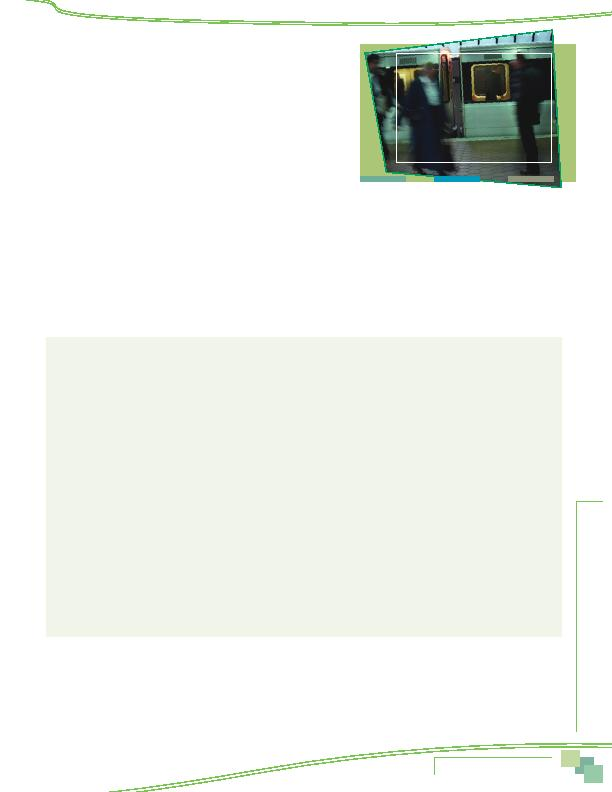

MWCOG-Comm
uter Conn
ecti
on
s-- 2010 State o
f th
e Comm
ute Report
9 3
71 How long did you <ALT MODE FROM Q66> to work?
(IF MORE THAN ONE ALT MODE NOTED IN Q66, ASK DURATION FOR ALL)
_______ months (CONVERT YEARS TO MONTHS)
_______ less than one month
_______ 991 occasionally (tried one, emergency use)
(SKIP TO Q81)
_______ 999 still using
999 DK/Ref.
IF Q66 = 19, 20, 21, 22, 23, 24 (MORE THAN ONE OF THESE), THEN CHOOSE ALT
MODE USED LONGEST TIME FOR Q72a. IF MORE THAN ONE ALT MODE USED SAME
AMOUNT OF TIME, CHOOSE BOTH MODES.
72a Before trying <ALT MODE FROM Q66> to work, what type or types of transportation did you use to get to work?
(ACCEPT MULTIPLE RESPONSES, PROGRAMMER, LIST MODES FOR USE IN Q72b)
FOR EACH MODE MENTIONED IN Q72a, ASK...
72b About how many days per week did you use
<MODE FROM Q72a>?
·
IF SUM OF DAYS FROM Q72b NE Q5, ASK "And how did you commute on other days you were assigned to work?"
ACCEPT OPTION OF "didn't work, regular day off."
·
IF Q12 = 1, 2, OR 3 AND RESPONDENT DOES NOT MENTION "CWS day off" (RESPONSE 1),
ASK: "You said you typically work a compressed work schedule now. Did you work a compressed schedule at that time?"
·
IF Q14 = 4, 5, OR 6 AND RESPONDENT DOES NOT MENTION "Telecommute" (RESPONSE 2),
ASK: "You said you typically telecommute one or more days per week now. Did you telecommute at that time?"
Mode/Day typically used per week
Number of days using mode
1 compressed work schedule day off
1
2
3
4
5
2
telecommute
1 2 3 4 5
3 drive alone in your car, taxi
1
2
3
4
5
4
motorcycle
1 2 3 4 5
5 carpool, including carpool with family
member, dropped off
1
2
3
4
5
6 casual carpool (slugging)
1
2
3
4
5
7
vanpool
1 2 3 4 5
8
buspool
1 2 3 4 5
9
bus
1 2 3 4 5
10
Metrorail
1 2 3 4 5
11
MARC
1 2 3 4 5
12
VRE
1 2 3 4 5
13 AMTRAK, other train
1
2
3
4
5
14
bicycle
1 2 3 4 5
15
walk
1 2 3 4 5
16 didn't work, regular days off
1
2
3
4
5
17 N/A
18 N/A
19
Taxi
1 2 3 4 5
20 N/A
21 not working then, not in DC area then
5
99 don't know, refused
5
AWARENESS OF COMMUTE PROGRAMS/SERVICES
Now I have a few questions about services that might be available to commuters in your home or work areas.
81 Is there a phone number or website you can use to obtain information on ridesharing, public transportation,
HOV lanes, and telecommuting in the Washington region?
1 Yes
2 No (SKIP TO Q86)
9 DK/Ref (SKIP TO Q86)
Appendix--Survey Questionnaire